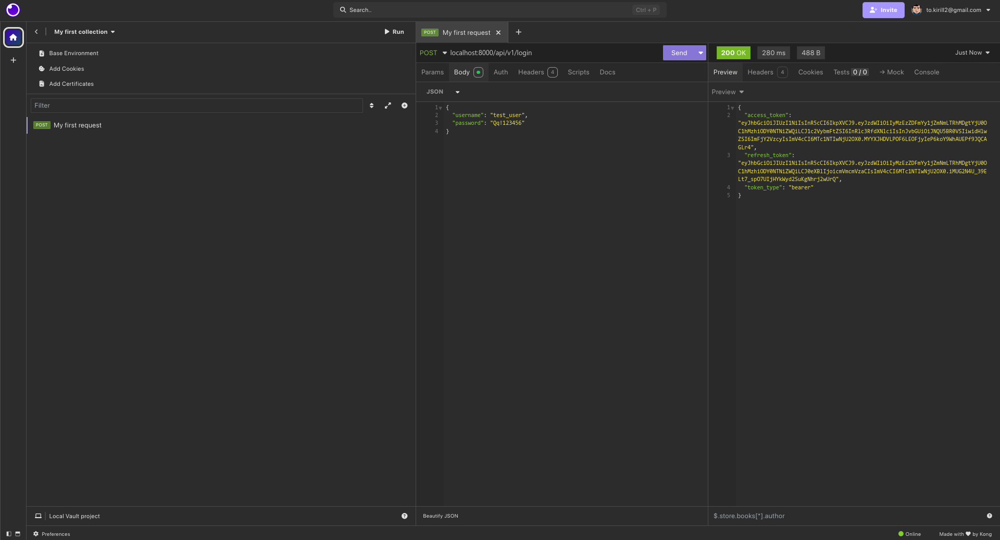
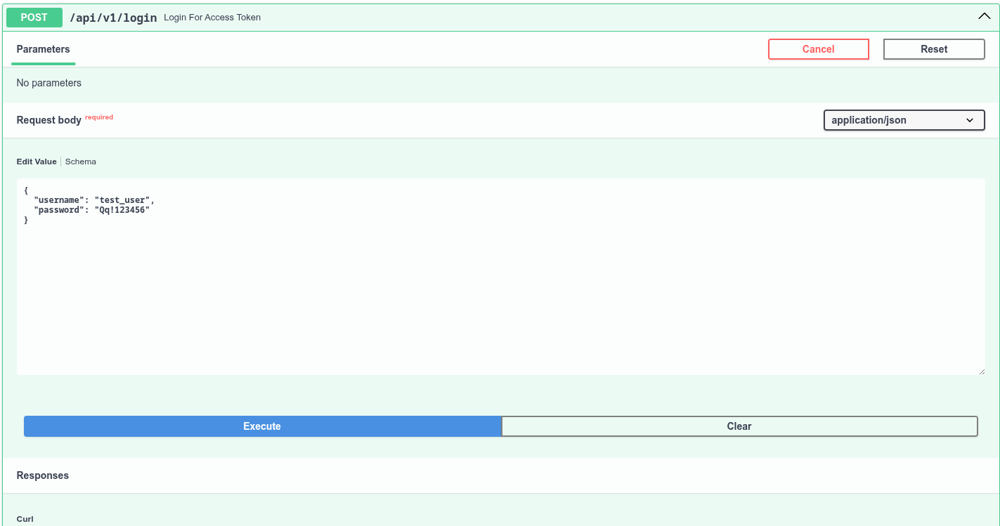
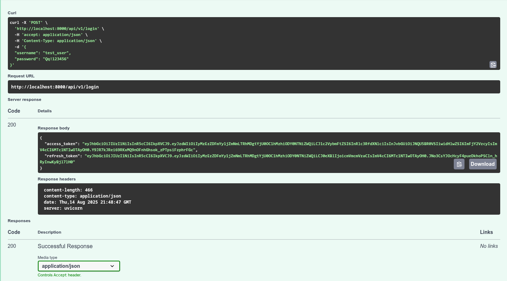
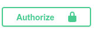

После регистрации пользователь должен авторизоваться, чтобы получить токен доступа (обычно JWT или Bearer Token). Этот токен используется для работы с защищёнными эндпоинтами API.
POST /auth/login HTTP/1.1
Host: localhost:8000/api/v1/login
Content-Type: application/json
{
"usernane": "test@example.com",
"password": "Qq!123456"
}
Ответ (успех):
{
"access_token": "eyJhbGciOiJIUzI1NiIsInR5cCI6Ikp...",
"token_type": "Bearer"
}
Создай новый запрос.
Метод POST.
URL:
https://localhost:8000/api/v1/login
Headers:Content-Type: application/json
Body выбери raw → JSON и вставь:{
"email": "user@example.com",
"password": "Qq!123456"
}
Send.access_token — он понадобится для всех защищённых запросов.New Request).POST, URL:https://localhost:8000/api/v1/login
Body выбери JSON:{
"email": "user@example.com",
"password": "Qq!123456"
}
Отправь запрос ( Send).
Сохрани токен из поля access_token.
Найди эндпоинт POST api/v1/login.
Нажми Try it out.
Введи данные:
Execute.

access_token из ответа.

В Postman или Insomnia:
Headers и добавь:Authorization: Bearer <твой_токен>
В Swagger UI:
Найди кнопку Authorize.
Вставь токен:
Authorize, теперь Swagger будет подставлять токен автоматически во все защищённые запросы.💡 Совет QA: При тестировании защищённых запросов обязательно проверяй:
Что без токена запрос возвращает 401 Unauthorized.
Что с просроченным или неверным токеном приходит 401 или 403.
Что с токеном другого пользователя данные /me не утекут.
1. Авторизация обязательна
401 Unauthorized."Missing Authorization Header").2. Валидность токена
401 Unauthorized.Token abc вместо Bearer abc) → ожидать 401.401.3. Срок действия токена
401 Unauthorized или 403 Forbidden (зависит от реализации).4. Проверка прав доступа
user для эндпоинта, доступного только admin → ожидать 403 Forbidden./users/{id}/detail).5. Формат заголовка Authorization
Bearer и токеном обязателен.bearer, Bearer).6. Негативные сценарии
401.Auth) → 401.stack trace.{kind=link}
{kind=link}
{kind=link}
{kind=link}
{kind=link}
{kind=link}
{kind=link}
{kind=link}